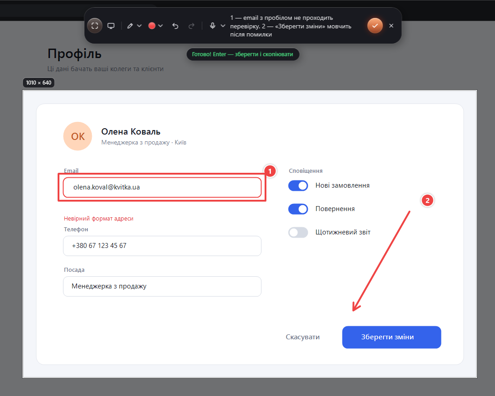
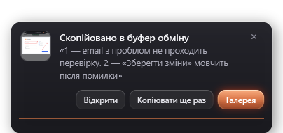
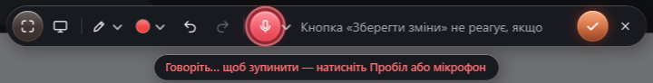
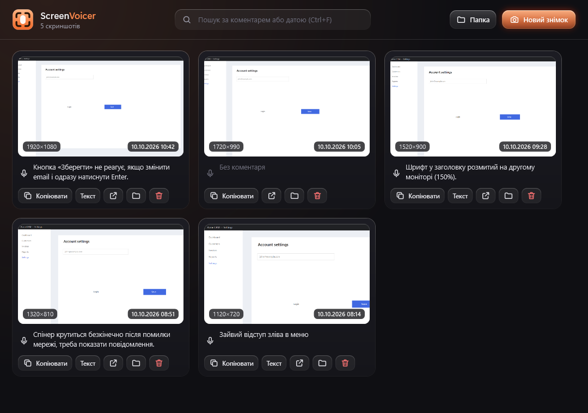

Скриншот, який пояснює сам себе
Виділіть місце на екрані, намалюйте стрілку й скажіть, що не так. Натисніть Enter — і картинка разом із вашими словами вже в буфері. Вставляйте в ChatGPT, Claude, Jira чи Telegram.


Від «щось не так» до задачі за десять секунд
Не треба зберігати файл, відкривати редактор і друкувати пояснення. Ви показуєте й кажете, а ScreenVoicer збирає все в одне повідомлення.
Зупиніть мить
Екран застигає. Виділіть область мишкою і за потреби додайте стрілку, рамку, текст або мітки 1-2-3.
Розкажіть голосом
Тримайте Пробіл і говоріть, або торкніться його чи мікрофона, щоб записувати без рук. Текст з'являється, поки ви говорите.

Вставте куди завгодно
Вікно зникає миттєво. PNG і коментар уже в буфері: у чат вставиться картинка, у термінал або задачу — текст із шляхом до файлу.
Ось що потрапляє в буфер
Шлях до PNG і ваш коментар у Markdown. Нейромережа бачить і картинку, і ваші слова, тож одразу розуміє, що виправити.
[C:\AI_Screenshots\screenshot_20261010_091233_418.png] **Comment:** 1 — email з пробілом не проходить перевірку. 2 — «Зберегти зміни» мовчить після помилки
Усе, що треба, щоб вас зрозуміли з першого разу
Розмітка, як від руки
Олівець, маркер, стрілка, рамка, текстові підписи й нумеровані мітки. Ctrl+Z скасовує все, навіть переміщення.
Розуміє нечітку вимову
Модель Whisper large-v3 правильно розпізнає навіть тиху чи невиразну мову. Програма також підкаже, якщо мікрофон звучить глухо.
Швидко на відеокарті
З NVIDIA CUDA фраза розпізнається приблизно за 3,5 с, з AMD чи Intel — через Vulkan. Без відеокарти працюють легші моделі.
Один буфер на все
Картинка, файл і Markdown копіюються разом, а програма, у яку ви вставляєте, сама бере потрібне.

Кожен знімок зі своєю історією
- Пошук за словами з коментаря або за датою.
- Перетягніть картинку мишкою прямо в чат, і вона прикріпиться як файл.
- Скопіюйте знову будь-коли: Markdown, лише текст або сам PNG.
Ваш голос не виходить з комп'ютера
Розпізнавання працює на вашому ПК. Немає хмари, акаунта й підписки, а записи нікуди не відправляються.
Інтернет потрібен лише один раз: щоб завантажити мовну модель і, за бажанням, прискорення NVIDIA. Далі все працює навіть офлайн.
Що потрібно
| Система | Windows 10 або 11, 64-біт |
|---|---|
| Програма | Один файл близько 75 МБ, .NET встановлювати не треба |
| Мовні моделі | Від 141 МБ до 1 ГБ на вибір, завантажуються один раз |
| Відеокарта | Необов'язкова. NVIDIA — через CUDA (≈590 МБ додатково), AMD та Intel — через Vulkan |
| Мови голосу | Українська, англійська або автовизначення |
| Гаряча клавіша | Alt + Shift + S, можна змінити в треї |
Показуйте. Кажіть. Вставляйте.
Безкоштовно, з відкритим кодом. Оновлюється сама. Якщо Windows попередить про невідомого видавця: «Докладніше» → «Однаково запустити».
Завантажити для Windowsбезкоштовно